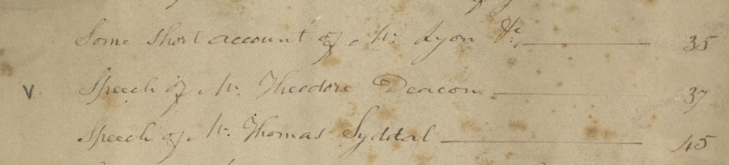

As the volume 11 contains the index for the other 10 volumes, the encoding for volume
11 is slightly different from a standard TEI encoding framework. The folder structure
looks like so:
vol11/
vol11.xml
vol11_vol1.xml
vol11_vol2.xml
vol11_vol3.xml
[...]
The
vol11.xml
file contains all of the metadata for volume 11, but does not contain the transcription
for the volume. Instead, each volume its own fragment file that contains the transcription for that volume's section within the index. This
is mostly for convience: splitting the files this way makes it easier for multiple
encoders to work on the index at the same time. Note that these fragment files do
not begin with the standard TEI element, but instead use a special type of div (div/type="index") that contains the transcription for that section of the index. Each file will look
something like this:
Use a self-closing (i.e. empty) pb element to denote the start of a new physical page in the manuscript. In most cases, the pb element should go exactly where it happens in flow of the text.
While there are two digitized images, the encoding for the above should contain four pb elements, one for each of:
the blank verso page
the recto page
the blank verso page
the recto page
Since the first paragraph of text extends across the page boundary, we place the
pb within the middle of the paragraph:
<pb facs="lib:3"/> <pb facs="lib:3"/> <div type="preface"> <lb/> <opener> <salute>Dear <persName>Mr. Blank</persName>,</salute> </opener> <lb/> <p>I have at rescued <lb/> the <title level="m">Index to the Lion in Mourning</title> from <lb/>my father's hands where it has lain <lb/> <!-- [....] --> <lb/>Chambers thirteen years ago. You may <pb facs="lib:4"/> <pb facs="lib:4"/> <fw type="pageNum" place="right">2</fw> <lb/>therefore submit the matter to the <lb/>Curators whenever you choose.</p> </div>
There are a few things to note here:
Each line of text is denoted by using the lb (line beginning) element. Like the pb element, the lb element is self-closing and denotes the beginning of a line.
Each pb element also has a facs attribute that denotes the SFU Library page number by using the special lib: prefix. The facs attribute, in other words, provides a mechanism for aligning the transcription with
the digital images housed at SFU library.
We encode the written page number using the fw (formework) element with an type value of pageNum and an place value of right.
Encoding the Indexes
Each indexed volume has a separate file that will house your transcription. These
are a bit strange compared to the rest of the documents; they begin with a div element, rather than a TEI (this is because these aren't distinct documents, but rather fragments all contained
with one document).
Each volume's index can be considered as a single list with each letter, narrative, etc found in the manuscript as a separate item in that list:
<div type="index" xml:id="vol11_vol1"> <pb facs="lib:9"/> <fw type="pageNum" place="left">1</fw> <fw type="pageNum" place="right">3</fw> <list> <item><!-- The first item --></item> <item><!-- The second item --></item> <!-- .... --> </list> </div>
Like above, these documents should contain all of the bibliographic information for
the document (i.e. page beginnings [pb], page numbers and other formeworks [fw], etc).
Index Items
Basic Structure
Within the list, encode each item as a separate item that contains the title of the piece and a page number, encoded using the title and num tag, respectively:
<list> <item><!-- Encoding of the title simplified for demonstrative purposes... --> <title>Letter from the Revt. Mr. Lyon to his mother + Sisters</title> <num>1</num> </item> </list>
Note that we do not encode information about the separating line between the page
number and the title.
Marginalia in Index Items
Some of the index items will have marginal marks or annotations associated with that
item that we want to capture. To do so, encode the note text using note element with an place to signal the note's position. The note element should be contained within the item with which it is associated. For example: this item from volume 11:
From volume 11; item with note.
is encoded like so:
<item> <note place="left">v</note> <title>Speech of Mr. Theodore Deacon</title> <num>37</num> </item>